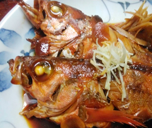

メバルの煮つけ
- 調理時間：30分
- （一人当たり）
- カロリー：397kcal
- たんぱく質：38.2g
- 脂質：7.1g
- 炭水化物：31.8g
- 塩分：3.7g


＜2人分＞
- メバル
- 2匹
- レンコン
- 適量
- ゴボウ（ささがき）
- 適量
- ショウガ
- 1片
- ・しょうゆ
- 大さじ3
- ・酒
- 1/2カップ
- ・水
- 1カップ
- ・みりん
- 大さじ2
- ・砂糖
- 大さじ2
A


- 【下準備】
メバルはウロコ、内臓を取り除き、えらの部分を掃除する。
盛付けの表になる皮目に、包丁の刃先で十字に切り目を入れる。 - ショウガは細切りにする。
レンコンは半月切りにする。
ゴボウはささがきにして、水にさらす。 - フライパンにAを煮立て、メバルの頭を左にして入れ、落し蓋をして中火で6分くらい煮る。
- レンコンとゴボウを加え、さらに6分煮て、煮汁が少なくなってきたら、スプーンで煮汁を全体にかけながら煮詰める。
- 器に盛り付け、レンコン、ゴボウ、針ショウガを添えて完成。
メバルの煮つけ
メバルは北海道から九州までの各地で1年を通じて漁獲されますが、中でも春がもっとも漁獲量の上がるシーズンだとされています。クセのない淡泊な味わいで、刺身や煮つけなどの和食からアクアパッツァやポワレなどの洋食にも楽しめます。
定番の煮つけは、丸ごと1匹食べられる人気の一品。甘辛い味付けは、白いご飯にも、酒の肴にもってこいです。